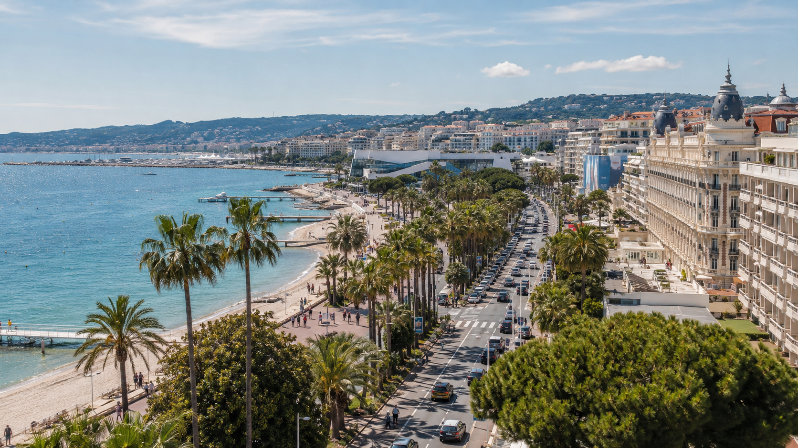
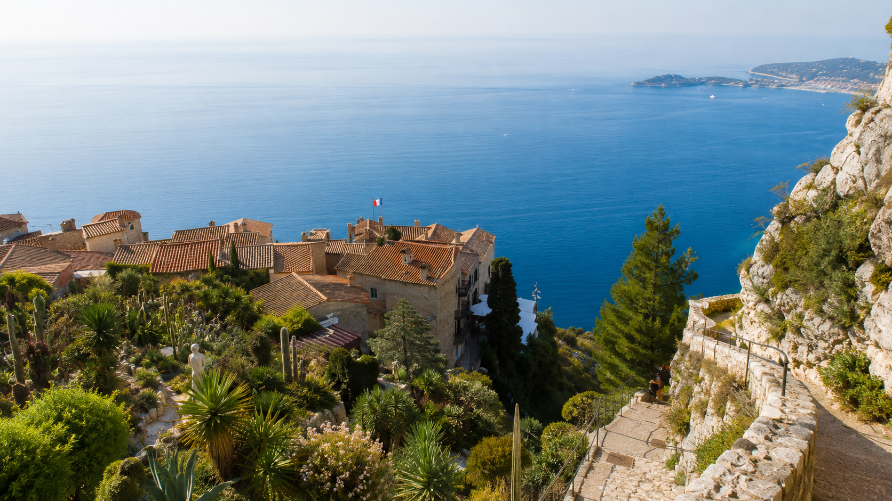
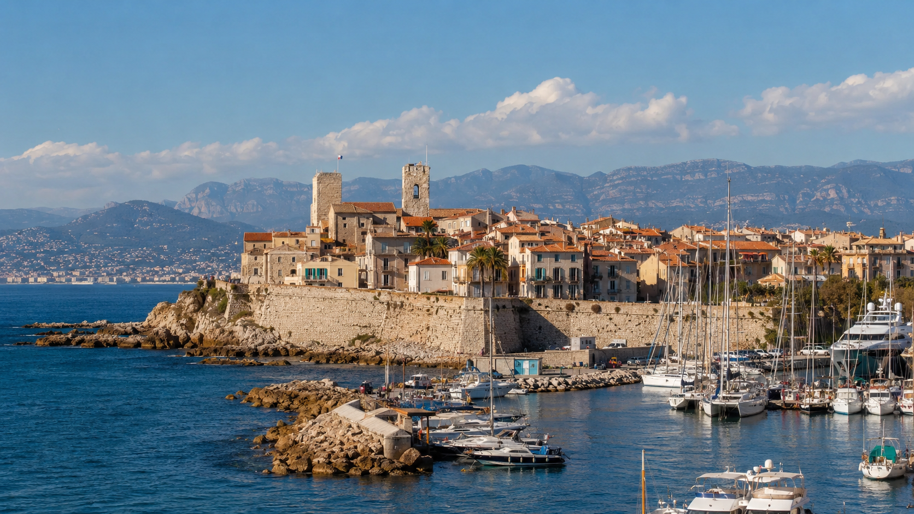
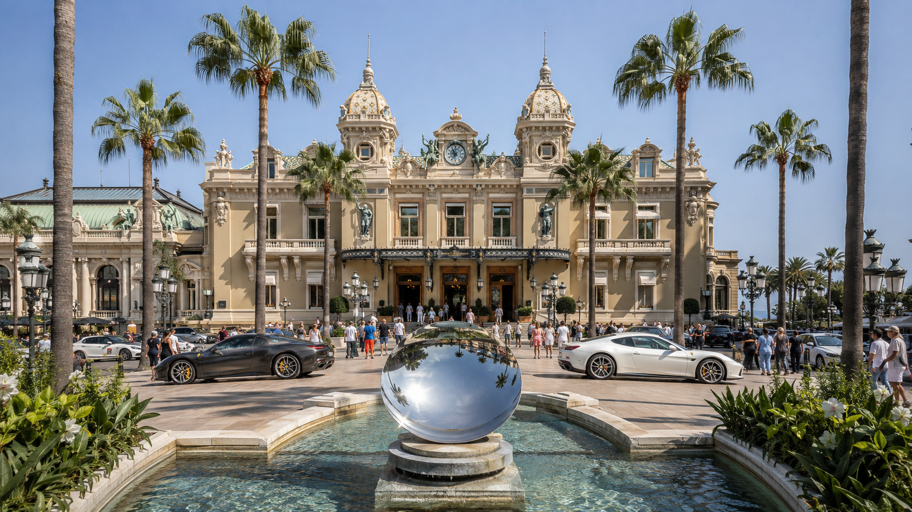
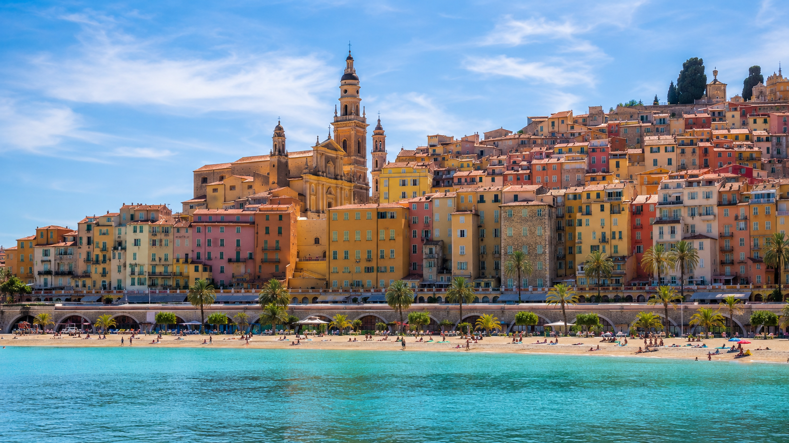
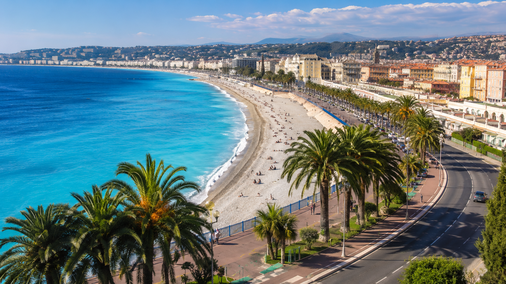

Francúzska riviéra znie ako miesto, kde sa pri prístavoch lesknú superjachty, pred hotelmi stoja luxusné autá a obyčajná káva môže stáť viac než obed doma. Lenže Côte d’Azur nie je iba svet filmových hviezd, kasín a súkromných plážových klubov.
Medzi Cannes a talianskou hranicou sa ukrývajú farebné mestá, malé zátoky, stredoveké dedinky zavesené vysoko nad morom, pobrežné chodníky aj miesta, medzi ktorými sa dá pohodlne cestovať vlakom. A od roku 2026 je Francúzska riviéra dostupnejšia aj pre slovenských cestovateľov – do Nice sa už lieta priamo z Bratislavy.
Otázka preto neznie, či je Francúzska riviéra krásna. Otázka znie: ako z nej za niekoľko dní vidieť to najlepšie a neminúť celý dovolenkový rozpočet?
Dobrá správa: z Bratislavy sa lieta priamo do Nice
Áno, priama linka skutočne existuje.
Spoločnosť Wizz Air spustila spojenie Bratislava – Nice 31. marca 2026. Linka je súčasťou letného letového poriadku a podľa aktuálneho programu letiska Nice má premávať do 24. októbra 2026, spravidla trikrát týždenne, pričom v júni a júli môže byť ponuka zvýšená až na štyri lety týždenne. Pri oznámení linky sa ceny začínali od 29,99 €, reálna cena však závisí od termínu, obsadenosti, batožiny a času nákupu.
Pre cestovateľa zo západného a stredného Slovenska je to momentálne najjednoduchšia možnosť. Pristanete priamo na letisku Nice Côte d’Azur, ktoré sa nachádza na pobreží len niekoľko kilometrov od centra mesta.
Letisko nie je ďaleko od mesta
Električková linka 2 spája oba terminály letiska s centrom Nice. Na zastávku Jean Médecin sa dostanete za menej ako 30 minút a električky počas pracovných dní premávajú približne každých sedem až osem minút. Medzi terminálmi a zastávkou Grand Arénas je doprava bezplatná.
To znamená, že po prílete nepotrebujete drahý súkromný transfer ani prenajaté auto. Z lietadla sa môžete pomerne rýchlo dostať priamo do centra mesta.
Ak vám let z Bratislavy nevyhovuje, možností je viac
Priamy let z Bratislavy je najjednoduchší, ale nie vždy musí mať najlepšie dni, časy alebo ceny. Najmä obyvatelia východného Slovenska by mali porovnať aj okolité letiská.
Viedeň – najväčší výber termínov
Medzi Viedňou a Nice lieta Austrian Airlines. Počas hlavnej letnej sezóny je v ponuke približne 14 až 21 spojení týždenne, takže v niektorých obdobiach možno vyberať až z troch letov denne. Viedeň je preto dobrou rezervnou možnosťou, keď vám nesedí letový deň z Bratislavy alebo potrebujete presný čas príletu a odletu.
Budapešť – časté priame lety
Z Budapešti lieta do Nice priamo Wizz Air. Letisko Nice vo svojom letnom programe 2026 uvádza približne sedem až deväť spojení týždenne. Pre južné Slovensko môže byť Budapešť praktickejšia než Bratislava alebo Viedeň.
Krakov – zaujímavá možnosť pre východ Slovenska
Z Krakova ponúka Wizz Air počas letnej sezóny približne šesť priamych letov týždenne. Pre cestovateľov z Prešova, Popradu, severného Spiša či časti Košického kraja môže byť cesta autom alebo autobusom do Krakova výhodnejšia než presun cez celé Slovensko do Bratislavy.
Z Košíc s prestupom vo Viedni
Priama linka z Košíc do Nice v aktuálnom zozname pravidelných liniek Letiska Košice nie je. Austrian Airlines však predáva spojenie Košice – Nice, ktoré sa realizuje s prestupom vo Viedni. Výhodou môže byť jedna rezervácia a chránený prestup, čo je bezpečnejšie než samostatne kupovať dva nezávislé nízkonákladové lety.
Z Košíc sa dá letieť aj do Bratislavy a pokračovať do Nice, no pri dvoch samostatných rezerváciách treba nechať veľmi veľkú časovú rezervu. Ak prvé lietadlo mešká a ďalší let zmeškáte, dopravca druhej rezervácie vás spravidla nemusí bezplatne prebookovať.
Autom zo Slovenska
Cesta autom má význam najmä vtedy, keď cestuje viac ľudí, chcete zostať dlhšie alebo plánujete pokračovať do Provensálska či severného Talianska. Zo Slovenska treba podľa miesta štartu a zvolenej trasy počítať orientačne s približne 1 250 až 1 550 kilometrami v jednom smere.
Nevýhodou sú diaľničné poplatky, palivo, parkovanie a hustá premávka na pobreží. Pri klasickom pobyte medzi Cannes, Nice, Monakom a Mentonom preto auto nie je nevyhnutné.
Vlakom ako súčasť väčšej cesty
Francúzsku riviéru možno spojiť aj s cestou vlakom cez Viedeň, Zürich, Miláno alebo severné Taliansko. Nie je to najrýchlejší spôsob a zvyčajne si vyžiada viac prestupov, ale môže byť zaujímavý pri dlhšom európskom výlete. Konkrétne spojenia je potrebné skontrolovať pre vybraný deň, pretože trasy a nadväznosti sa menia.

Nice je najlepšou základňou na prvú návštevu
Nice nie je iba vstupnou bránou na riviéru. Je to plnohodnotná destinácia s historickým centrom, trhmi, vyhliadkami, prístavom a slávnou Promenade des Anglais. Promenáda je verejne prístupná počas celého roka a patrí medzi najznámejšie symboly mesta.
Najväčšou výhodou Nice je však poloha. Na jednej strane sa vlakom dostanete do Antibes a Cannes, na druhej do Villefranche-sur-Mer, Èze-sur-Mer, Monaka a Mentonu.
Podľa aktuálneho vyhľadávania SNCF trvá priame vlakové spojenie z Nice do Cannes približne 27 až 41 minút. Medzi Nice a Monakom môže najrýchlejší vlak zvládnuť cestu približne za 17 minút. Počet vlakov je vysoký, ale konkrétne časy a ceny si treba skontrolovať pre deň cesty.
Praktický záver: na prvú cestu by som si vybral ubytovanie v Nice v pešej vzdialenosti od stanice Nice-Ville alebo električky. Väčšinu riviéry potom môžete objavovať bez auta.
Francúzska riviéra za sedem dní
1. deň: Nice – prvé stretnutie s Azúrovým pobrežím
Začnite prechádzkou po Promenade des Anglais, pokračujte do úzkych uličiek starého Nice a na trh Cours Saleya. Podvečer vystúpte na vyhliadku Colline du Château, odkiaľ sa otvára jeden z najznámejších pohľadov na záliv, promenádu a strechy starého mesta.
Nice nepôsobí ako malé dovolenkové letovisko. Je živé, mestské a miestami rušné. Práve preto je dobré ako základňa – večer máte na výber množstvo reštaurácií a cez deň môžete odchádzať na výlety.
Treba počítať s tým, že väčšina pobrežia v Nice je kamienková. Topánky do vody sa môžu hodiť viac než ďalší pár elegantných sandálov.
2. deň: Villefranche-sur-Mer a Saint-Jean-Cap-Ferrat
Len kúsok od Nice sa nachádza Villefranche-sur-Mer s farebnými domami, úzkymi uličkami a hlbokým zálivom. Atmosféra je pokojnejšia než v Nice a miesto je vhodné na pomalú prechádzku, kúpanie aj obed pri pobreží.
Pokračovať môžete smerom na Saint-Jean-Cap-Ferrat. Práve na podobných miestach riviéra ukazuje, že nie je iba o mestách a drahých butikoch. Pobrežné chodníky ponúkajú výhľady na skaly, vily, malé zátoky a otvorené more. Oficiálna turistická organizácia Côte d’Azur zdôrazňuje pobrežné výlety, dedinky a prírodu ako jednu z hlavných stránok regiónu.
3. deň: Èze a Monako
Èze je stredoveká dedinka postavená vysoko nad morom. Kamenné uličky, domy obrastené rastlinami a dramatické výhľady vytvárajú atmosféru, ktorá sa výrazne líši od pobrežných miest. Oficiálny portál Côte d’Azur ju opisuje ako stredovekú dedinku s dláždenými uličkami, kamennými domami a typickou stredomorskou vegetáciou.
Pozor na jednu častú chybu: železničná stanica Èze-sur-Mer sa nachádza pri pobreží, zatiaľ čo historická dedinka Èze Village je vysoko nad ňou. Najpraktickejší býva autobus priamo do dedinky. V letnej sezóne 2026 ju s Nice a Monakom spája napríklad linka 602.
Po návšteve Èze môžete pokračovať do Monaka. Monako je samostatný štát, ale z dopravného hľadiska prirodzene zapadá do výletu po riviére. Pozrieť si môžete staré mesto Monaco-Ville, prístav, okolie kniežacieho paláca a Monte Carlo.
Na jedno popoludnie to stačí. Kto nechce platiť za drahé ubytovanie, môže sa večer pohodlne vrátiť vlakom do Nice.

4. deň: Menton – farebné mesto pri Taliansku
Menton leží tesne pred talianskou hranicou a patrí medzi najfotogenickejšie mestá na východnej časti riviéry. Pastelové domy sa dvíhajú nad pobrežím, staré mesto pôsobí kompaktne a v uliciach cítiť francúzsky aj taliansky vplyv.
Mesto je známe aj záhradami a citrusmi. Miestne záhrady vznikali aj vďaka botanikom, ktorí sem počas 19. storočia prinášali vzácne exotické rastliny. Citróny sa stali jedným z kultúrnych symbolov mesta.
Menton by som nebral iba ako rýchlu zastávku. Oplatí sa prejsť po pobreží, vystúpiť do starého mesta a zostať až do neskoršieho popoludnia, keď sa ulice začnú vyprázdňovať.
5. deň: Antibes a Juan-les-Pins
Antibes je vhodnou protiváhou k rušnému Nice a nablýskanému Cannes. Má historické centrum, hradby, veľký prístav a príjemnejšiu atmosféru menšieho prímorského mesta.
Neďaleký Juan-les-Pins je lepšou voľbou pre ľudí, ktorí hľadajú piesočnatejšie pláže. Oficiálne turistické stránky uvádzajú v tejto oblasti viacero pláží s jemným pieskom, napríklad Plage du Port Gallice pri Cap d’Antibes.
Antibes môže byť dobrou základňou aj pre rodiny alebo cestovateľov, ktorí chcú spojiť výlety s klasickejšou dovolenkou pri mori.

6. deň: Cannes – červený koberec aj staré mesto
Cannes sa spája predovšetkým s filmovým festivalom, luxusnými hotelmi a promenádou La Croisette. To však nie je všetko.
Oplatí sa vystúpiť do staršej štvrte Le Suquet, odkiaľ uvidíte prístav a veľkú časť pobrežia. Na jednodňový výlet Cannes úplne postačuje. Nie je nevyhnutné bývať priamo pri promenáde a platiť výrazne vyššie ceny ubytovania.
Z Cannes sa dá pokračovať loďou na Lérinské ostrovy, ktoré ponúkajú pokojnejšie prostredie, chodníky a iný pohľad na pobrežie. Táto možnosť je vhodná najmä vtedy, keď chcete po niekoľkých mestských dňoch viac prírody a mora.
7. deň: podľa nálady – Grasse, Saint-Paul-de-Vence alebo oddych
Posledný deň si nechajte voľnejší.
Milovníci dediniek môžu zamieriť do Saint-Paul-de-Vence, záujemcovia o parfumy do Grasse a tí, ktorí už nechcú nikam cestovať, môžu zostať v Nice alebo sa vrátiť na obľúbenú pláž.
Práve vnútrozemie ukazuje druhú tvár Francúzskej riviéry. Región nie je iba úzky pás pláží. Zahŕňa kopce, remeslá, umelecké dedinky, záhrady aj chodníky smerujúce do horského prostredia.
Kde sa ubytovať?
Nice – najlepšia voľba na prvú cestu
Vyberte si Nice, keď chcete vidieť čo najviac miest a nechcete prenajímať auto. Dobrá poloha pri stanici alebo električke vám ušetrí veľa času.
Vhodné pre: prvú návštevu, aktívnych cestovateľov, krátky pobyt a výlety vlakom.
Antibes alebo Juan-les-Pins – viac dovolenkovej atmosféry
Dobrá voľba pre ľudí, ktorí chcú menšie mesto, pokojnejšie večery a piesočnatejšie pláže.
Vhodné pre: rodiny, páry a cestovateľov, ktorí chcú kombinovať výlety s kúpaním.
Menton – pokojnejší východ riviéry
Menton je vhodný pre návštevníkov, ktorých viac láka farebné staré mesto, záhrady a blízkosť Talianska než večerný ruch Nice.
Vhodné pre: pokojnejšiu dovolenku, pomalé cestovanie a výlety do Monaka či talianskej Ligúrie.
Cannes – skôr zážitok než úsporná základňa
Cannes má svoje čaro, ale pri obmedzenom rozpočte by som ho navštívil ako jednodňový výlet. Najmä počas veľkých podujatí môžu ceny ubytovania výrazne stúpnuť.

Ako ušetriť na Francúzskej riviére
Najväčšiu úsporu neprinesie vynechanie jednej kávy, ale správne zvolený termín a miesto pobytu.
Cestujte radšej na jar, v júni, v septembri alebo začiatkom októbra. Počas hlavnej sezóny býva pobrežie najplnšie a ubytovanie najdrahšie. Oficiálny francúzsky turistický portál odporúča riviéru aj mimo hlavnej sezóny, keď je pokojnejšia a vhodná na výlety, dedinky a pobrežné chodníky.
Ubytujte sa pri verejnej doprave, nie nevyhnutne pri pláži. Používajte regionálne vlaky, ktoré spájajú najdôležitejšie pobrežné mestá. Verejné pláže striedajte s platenými klubmi a cez deň využite pekárne, trhy alebo menšie bistrá mimo hlavnej promenády.
Prenájom auta má význam pri výletoch do vnútrozemia. Na úseku Cannes – Antibes – Nice – Monako – Menton však môže byť skôr starosťou pre hustú premávku a parkovanie.
Pre koho je Francúzska riviéra dobrým tipom?
Côte d’Azur bude vyhovovať cestovateľom, ktorí nechcú stráviť celý pobyt iba na jednej pláži. Počas jedného týždňa možno spojiť more, mestá, dedinky, prírodu, vyhliadky, miestne trhy aj výlety vlakom.
Je vhodná pre páry, aktívnych cestovateľov, milovníkov fotografovania a ľudí, ktorí majú radi kombináciu francúzskej elegancie s talianskou atmosférou.
Menej vhodná bude pre návštevníkov hľadajúcich lacný rezort s veľkou piesočnatou plážou priamo pred hotelom. Riviéra je skôr o objavovaní – každé ráno nastúpiť na vlak alebo autobus a večer sa vrátiť s pocitom, že ste za jediný deň videli niekoľko úplne odlišných miest.


Oplatí sa teda Francúzska riviéra?
Áno, najmä teraz, keď sa z Bratislavy dá letieť priamo do Nice.
Francúzska riviéra nebude najlacnejšou dovolenkou pri Stredozemnom mori. Nemusí však byť ani nedostupným výletom pre milionárov. Keď si vyberiete Nice ako základňu, budete cestovať vlakmi a vyhnete sa vrcholu hlavnej sezóny, môžete za jeden týždeň spoznať Cannes, Antibes, Èze, Monako, Menton aj menšie pobrežné mestečká bez prenajatého auta.
A možno práve v tom spočíva jej najväčšie čaro. Ráno sa prechádzate po červenom koberci v Cannes, popoludní stojíte v kamennej dedinke vysoko nad morom a večer sedíte pri farebných domoch v Mentone – stále na jednom krátkom úseku stredomorského pobrežia.
Poznámka Letom po Stredomorí: Článok je spracovaný ako AI cestovateľský prieskum na základe aktuálnych oficiálnych dopravných a turistických zdrojov. Nejde o opis osobnej návštevy autora. Letové poriadky, ceny a dopravné spojenia sa môžu meniť, preto ich treba pred rezerváciou skontrolovať pre konkrétny termín.